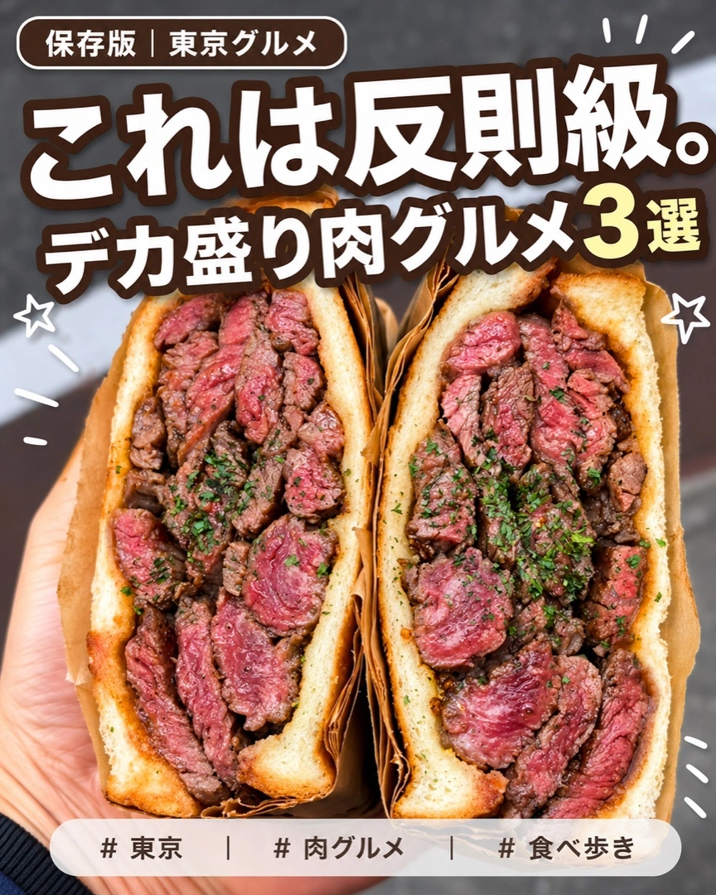
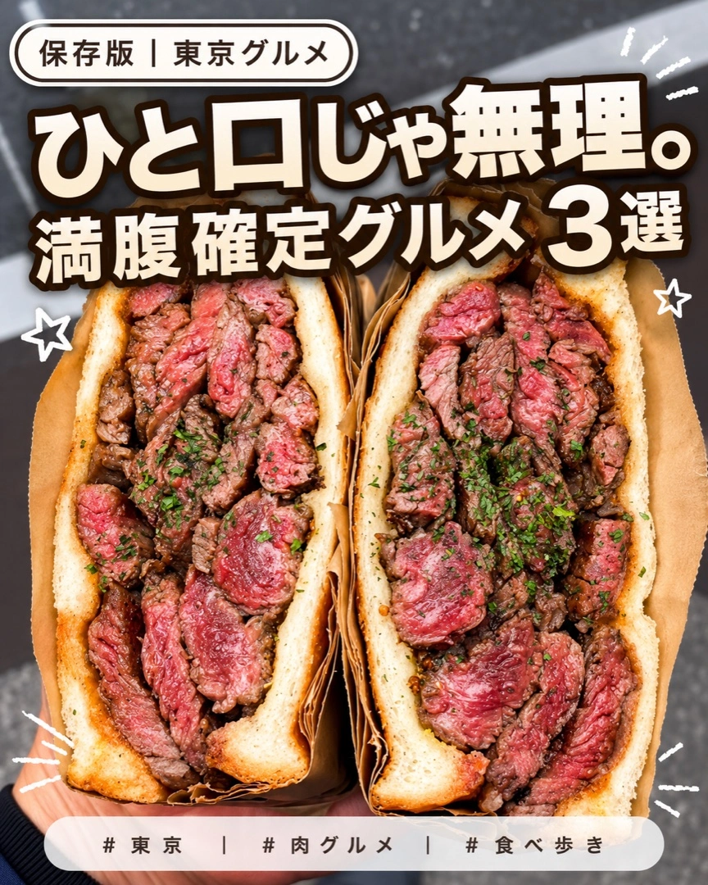
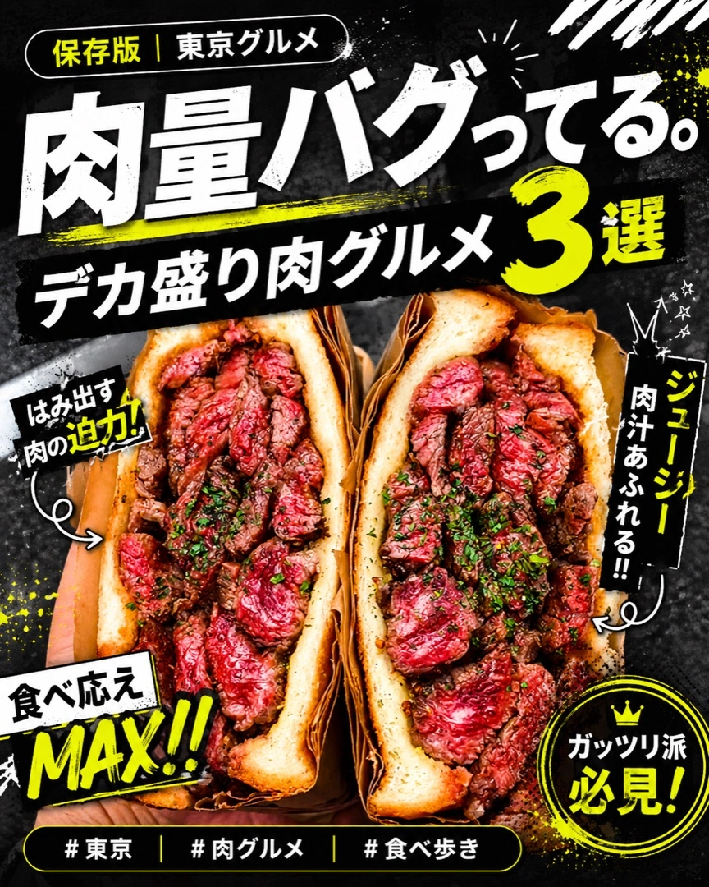
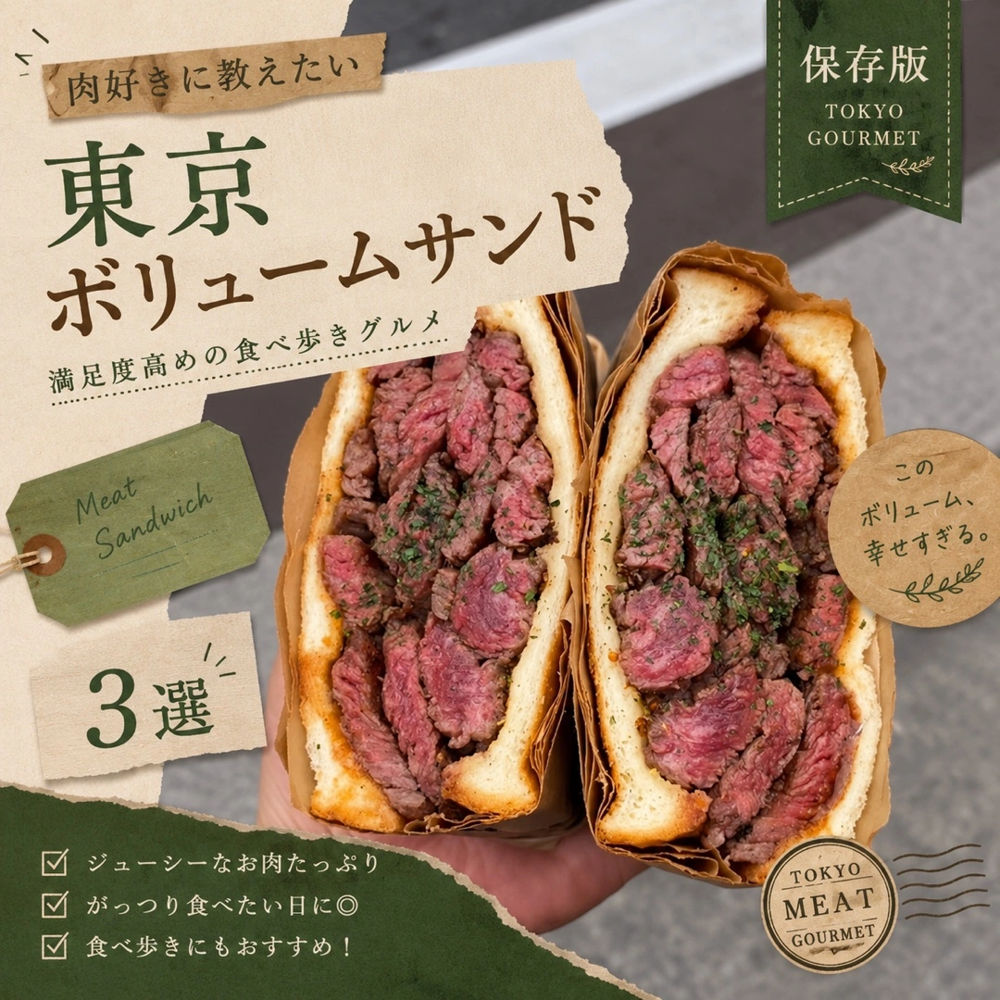
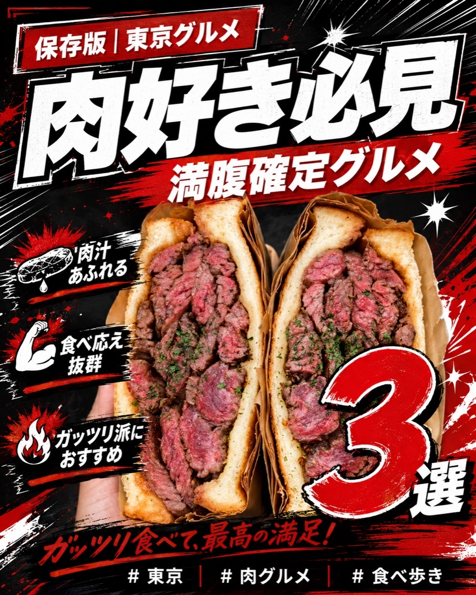
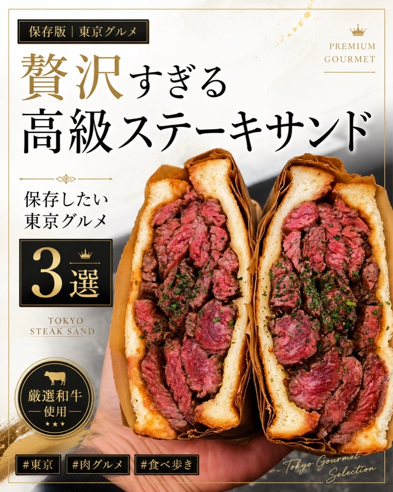
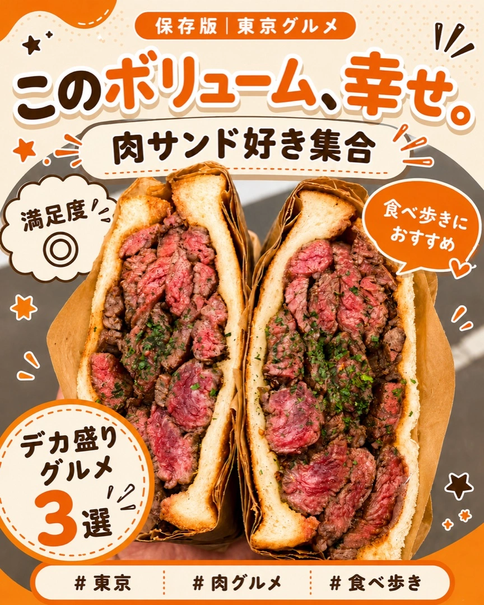
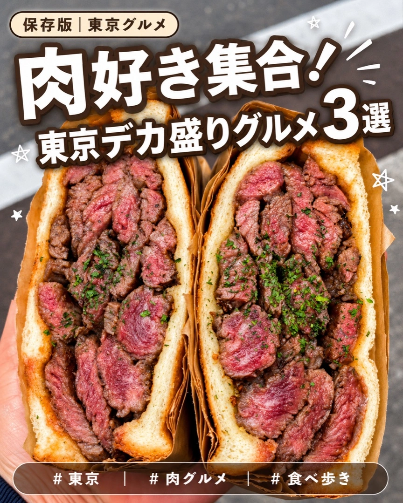

飲食店
Instagram
投稿デザイン
飲食・グルメ / SNS投稿 / 2026
支給写真の迫力をそのまま活かし、
「保存したい・行きたい」につなげる
Instagram投稿デザイン。
- 媒体
- Instagram 投稿画像
- テーマ
- 飲食店グルメ紹介（保存版まとめ）
- ターゲット
- グルメ・食べ歩き好き
- サイズ
- 1080 × 1350
- ご提案
- 3案からお選びいただく形式
ご提案した3案 Proposal
見本に近い「ポップ・保存版」方向で、肉の迫力を活かした3案を制作・ご提出しました。
アカウントの雰囲気やお好みに合わせて選べるよう、コピーの切り口を変えています。
肉、はみ出しすぎ。
幅広い層 / 保存・王道狙い
写真の「はみ出す肉」を、そのまま感想型のコピーに。素材とコピーが一致し、思わず保存したくなる王道案です。

これは反則級。
インパクト重視 / バズ狙い
極太ゴシックでインパクトを最大化。「3選」を強調し、まとめ投稿らしい保存性の高さを演出しました。

ひと口じゃ無理。
食べ歩き・ガッツリ層
ボリューム感を言葉にして満腹感を訴求。食べ歩き・がっつり派に刺さる、共感型のコピー設計です。
※ 各画像はクリックで拡大表示
ご参考：他の方向性 Variations
ご参考までに、他のテイストでも制作してみました。
アカウントの世界観に合わせて、幅広い方向性に対応できます。

ストリート系
黒×ネオンイエロー／バズ感

おしゃれカフェ・雑誌系
クラフト×深緑／上品

肉グルメ迫力系
赤×黒×白／インパクト

高級ステーキ系
白×黒×ゴールド／大人向け

親しみやすいポップ系
オレンジ×クリーム／保存系

ポップ王道・別案
ブラウン／明るい印象
Design Point
デザインで意識したこと
一瞬で手を止める文字組み
写真を加工しすぎず、コピーの太さ・縁取り・余白でタイムライン上の視認性を高めました。
保存につながる情報設計
上部ラベル・中央コピー・下部ハッシュタグ帯の3層に整理し、まとめ投稿らしい保存版感を演出しました。
素材の魅力を主役に
肉の断面がいちばん映える位置を空け、写真を隠さずに読ませるバランスへ整えました。